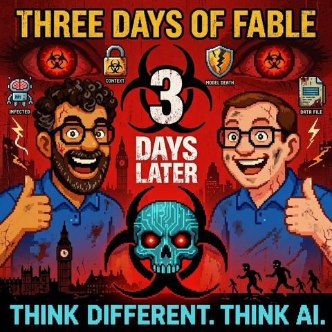

Three Days of Fable
Read in EnglishThemen Modelle und AnbieterKI-Sicherheit
33 Sekunden zur Folge, bevor du liest.
Worum es geht
Wie ein US-Regierungsbefehl ein KI-Modell abschaltet
Was passiert, wenn ein KI-Modell so gut ist, dass eine Regierung es einfach abschaltet? Genau das ist Anthropic mit seinem neuen Modell Fable 5 passiert, und Mark und Jens ordnen in dieser kurzfristig eingeschobenen Folge ein, was in nur drei Tagen daraus wurde. Fable 5 gehört zur sogenannten Mythos-Klasse, einer Modellreihe, die bislang nur großen Playern wie Amazon und Google zur Verfügung stand, weil sie ungewöhnlich gut darin ist, Sicherheitslücken aufzuspüren: Bei Firefox wurden so an einem Tag Hunderte kritischer Bugs gefunden und geschlossen, und laut einem Heise-Bericht knackte eine Sicherheitsfirma mit Mythos einen Speicherschutz-Exploit auf Apple-M5-Hardware in nur fünf Tagen.
Jens berichtet aus erster Hand von seinem Praxistest mit Fable 5: kurze Prompts, wenig Vorprompting, dafür ungewohnt eigenständiges Arbeiten im Vergleich zu Opus 4.8 und GPT-5.5/Codex. Kurz nach dem Launch wurde jedoch der System-Prompt von Fable 5 geleakt, es gab eine Anhörung im Weißen Haus, und die US-Regierung stufte Anthropic als Lieferkettenrisiko ein und untersagte, das Modell nicht-amerikanischen Bürgern zur Verfügung zu stellen. Innerhalb von 90 Minuten war Fable 5 für alle anderen Nutzer weg, mitten in laufenden Sessions, mit hängenden Kontexten und Projekten, die sich nicht mehr sauber auf ein anderes Modell übertragen ließen.
Die Folge zieht die geopolitische Linie weiter: Der Vergleich mit dem Kill-Switch-Verdacht bei F-35-Kampfjets liegt nahe, ebenso die Parallele zur Erkenntnis aus der Corona-Pandemie, dass Europa in kritischen Lieferketten erschreckend abhängig ist. Wenn ein US-amerikanisches KI-Modell per Regierungserlass abgeschaltet werden kann, wird die Frage nach KI-Souveränität (wem gehört der Agent Harness, in dem ein Modell läuft, und wie unabhängig ist man von einzelnen Anbietern) plötzlich sehr konkret. Auch offene Alternativen wie Kimi, MiniMax M3 oder Manus lösen das Problem laut Mark nicht grundsätzlich, sobald auch diese Modelle strategisch relevant werden.
Als Konsequenz plädieren beide für einen intelligenten Modell-Switcher in der eigenen KI-Architektur, verbunden mit dem Eingeständnis, dass beim Wechsel zwischen Modellen viel Reasoning und Kontext verloren geht, wenn er nicht separat gesichert wird. Genau hier kommt das wiederkehrende Thema Second Brain ins Spiel: Wissen und Kontext sollten nicht in der Session eines einzelnen Modells leben, sondern modellunabhängig und wiederauffindbar abgelegt sein. Als konkreten Ansatz bringen sie das Open Knowledge Format (OKF) von Google ins Spiel: ein Plädoyer dafür, professionelle Dokumentation wieder stärker auf Inhalt statt auf Formatierung zu konzentrieren, damit sie von jedem Modell token-sparsam verarbeitet werden kann.
Transkript
00:00:00Willkommen bei Think Different, Think AI, dem Podcast von Mark und Jens.
00:00:07Zwei technologieverliebte Köpfe, die nicht nur über künstliche Intelligenz reden, sondern sie leben.
00:00:14Hier gibt es klare Einordnungen, echte Praxiseinblicke und einen frischen Blick auf das, was möglich ist.
00:00:20Verständlich, kritisch und immer mit einem Augenzwinker.
00:00:24KI zum Nachdenken, zum Schmunzeln und vor allem zum Mitreden.
00:00:29Herzlich willkommen bei Think Different, Think AI.
00:00:38Heute geht es um einen Regierungsbefehl.
00:00:42Eigentlich nicht wirklich um einen Regierungsbefehl,
00:00:45sondern um die Folgen eines Regierungsbefehls,
00:00:48warum ein Regierungsbefehl ausgesprochen wurde
00:00:52und was da eventuell für nachhaltige Konsequenzen
00:00:56für mich, für meinen Mitmoderator Jens oder für uns alle herauskommen.
00:01:03Ich möchte am Anfang euch, ja ja, der Jens, da wird wieder sagen so, ich lasse hier nicht
00:01:08zu Wort kommen, aber ich bleibe jetzt mal dabei, ich habe quasi jetzt aktuell so das
00:01:11Redeheft, ja, nicht den Schweigefuchs, sondern das Redeheft in der Hand, es ist nämlich
00:01:16etwas passiert, es kam ein neues Modell heraus und eigentlich ist so eine Nachricht
00:01:22ja total langweilig, weil neue Modelle sind natürlich Bandrechen. Neue Modelle sind natürlich
00:01:28das beste Modell, das wir jemals gebaut haben und so hat Anthropic Fable 5 herausgebracht auf Deutsch
00:01:36Fabel, also wer weiß ich mir überlegt, Fabel, so nach dem Motto, er birgt eine wahre Geschichte am
00:01:42Ende, das ist auch egal, hat das herausgebracht, ein Modell der Mythos Klasse, ich fühlte mich
00:01:49sofort am Star Trek erinnert, ja, ein Raumschiff der Constitution Class und so
00:01:54was, ja, aber sei mal dahingestellt. Und dieses Modell wurde veröffentlicht und
00:02:00hat so ein bisschen online von Mythos bekommen, weil eigentlich ist es, soweit
00:02:05ich das verstanden habe, Mythos gewesen, nur ohne die Möglichkeit
00:02:10Anfragen im Rahmen der Biologie und der Informationssicherheit zu geben, weil
00:02:17dieses Modell. Ihr erinnert euch, wenn ich kann man mal in die vergangenen Folgen von uns reinhören,
00:02:22es zu gefährlich ist und deswegen erst auch von Sicherheitsvorstellern so weiter getestet wurde.
00:02:27Und darum gibt es weiterhin dieses, ich weiß alles, Mythos-Modell und Fable 5 als ja,
00:02:33Consumer, Prosumer, professioneller Kunden, wie auch immer Modell im Angebot. Und das hat Anthropic
00:02:41uns allen angeboten und hat dabei gesagt Freunde, ihr dürft dieses Modell benutzen, ihr kriegt
00:02:47ist. Das war schon sehr merkwürdig für Menschen, die so ein Abo-Modell bei Anthropic haben.
00:02:51Ihr dürft das bis zum Paar 20. im Rahmen eures Abos mitverwenden. Danach wird es wahrscheinlich
00:02:59nur auf Bezahlbasis pro Token zur Verfügung stehen und die Preise dieses Modells werden
00:03:06dann doppelt so hoch sein, wie man es von Opus kennt. Doppelt so hoch, jetzt hole
00:03:11ich dann doch mal kurz Luft und ein Schluck zu trinken. Ich begrüße unser Multimillionaire
00:03:14Jens, wir erinnern uns aus vergangenen Folgen, er nutze seine Open-Claw-Installation, um
00:03:19reich zu werden.
00:03:20Ich sehe sein blauen Ferrari im Hintergrund, leuchtend in der Sonne und er mit der Sonnenbrille
00:03:27und dem Pina Colada.
00:03:28Prost, Jens, ich nehme einen Schluck, welchen Kontakt hattest du denn mit Fable 5 und ...
00:03:33Ja, hallo Mark, nimm mal einen Schluck aus der Pulle und herzlich willkommen zu
00:03:39dieser heutigen Folge.
00:03:40Natürlich bin ich immer noch nicht Multi-Millionär und
00:03:43Verbrenner noch mehr Token als mir lieb ist und habe auch Token wahrscheinlich mit Fable ein bisschen verbrannt.
00:03:48Solange es noch ging, da war es dann ja plötzlich weg.
00:03:51Da kommen wir gleich zu.
00:03:53Da kommen wir gleich zu.
00:03:55Ja, also in dem Moment, als ich jetzt mit Fable Kontakt hatte und ein bisschen umspielt habe damit,
00:04:01habe ich ein paar Webseiten generiert, Sachen, die ich irgendwie recherchiere, mal aufbereitet.
00:04:07Das war einfach gut, muss man sagen.
00:04:10Also das hat irgendwie sehr, sehr gut funktioniert mit wenig Korrektur, die ich irgendwie machen musste.
00:04:17Ich hab mich auch so ein bisschen an die Regeln gehalten, die sie vorgegeben haben.
00:04:22Also was zum Beispiel bei Fable interessant ist, dass man nicht so so viel vorprompten sollte.
00:04:28Also man musste jetzt nicht unbedingt alles beschreiben, was man da machen sollte,
00:04:32was man vielleicht von den anderen Modellen ein bisschen mehr kannte, sondern hat sich mehr darauf konzentriert,
00:04:37Was soll der eigentlich ja wirklich Outcome sein? Also was möchte ich dann hinterher haben,
00:04:40als dann im Detail zu beschreiben, mach das so und so, mach das so und so, nutze das und das,
00:04:44oder achte auf die Sicherheitslinien und nutze noch irgendwie eine Vorgabe, bla bla bla.
00:04:48Da ist Febel sehr stark mit kurzem Prompt zu arbeiten und daraus dann schon sehr beeindruckende
00:04:54Ergebnisse zu erzeugen. Und da gibt es auch noch Löcher zu sehen. Also selbst wenn
00:04:57jemand es leider verpasst hat mit Febel rumzuspielen, das Internet überschlägt
00:05:01sicher mit Beispiel und Momentanen, wo Leute über Videos über verrückte Webseiten
00:05:05generiert haben. Verrückte Applikationen generiert haben. Schöne Vergleichs-Webzeiten gibt es auch,
00:05:10die dann zeigen, wie es früher mit einer 4,8 Version aussah, ob das jetzt Simulation von
00:05:15Salit-Schwiegen-Wegungen oder so was. Ja, ja, Sternensystemen und so was. Das ist schon irre,
00:05:21also wirklich irre. Also wirklich, wo man sagen muss, ja, Fable hat da jetzt schon gezeigt,
00:05:26dass das Ende dieser Fahnenstange der KI-Entwicklung und was im Prinzip in der
00:05:33der Erzeugung von Software-Lösung möglich sein wird in Zukunft noch so was von mangelich erreicht ist.
00:05:41Wir werden da wirklich verrückte Sachen sehen, die Qualität des Outputs wird es tatsächlich immer besser und das hat wir einfach gezeigt.
00:05:47Bevor wir zu den von dir schon angedeuteten Einschränkungen, die sind auf einmal eingetreten sind, kommen vielleicht auch nochmal,
00:05:54ich habe keine Galaxie gebaut oder sowas, aber ich habe halt einfach meine Projekte genommen und habe dem Ding gesagt,
00:05:59guck mal, was du da verbessern könntest. Was fällt dir auf? Best practice? Keine Ahnung was.
00:06:03Und ich habe denselben Prompt an Opus und an GPT55. Also Opus, das andere Modell von Anthropic und
00:06:11GPT55, also von Codex. Und Fable war umlängenausführlicher. Er hat allerdings bei mir auch länger
00:06:20gebraucht, was vielleicht daran lag, dass ich hier den Ultrasync-Modus von Codex einfach
00:06:25Komm, hau rein, was kostet die Welt mit Beleuchtung, ne?
00:06:28Und ich hab ihm dann auch sehr viel abverlangen,
00:06:31so dass ich tatsächlich meinen Wochenlimit bei Anthropic verblasen habe an dem ersten Abend.
00:06:37Und dann gesperrt wurde bis Sonntag.
00:06:39So, und was ist denn seitdem passiert?
00:06:41Weil da ist nämlich ganz viel passiert,
00:06:42es gab nämlich dort, ich find die Begriffe so schön,
00:06:46die kenn ich eigentlich aus der Apple-Szene, das Jailbreaks.
00:06:49Also, es begab sich ja, das hast du mir ja sogar geschickt.
00:06:52Nein, du hast das Ding nicht gejailprojekt,
00:06:53aber du hast mir einen ersten Einblick in Fable geschickt, weil du mir ein GitHub-Repository zur Verfügung gestellt hast,
00:07:00also verlinkt hast, das ist das Bessere nicht, dass morgen gleich jemand klingelt von den freundlichen Herrschaften und sagt,
00:07:06ah, der Herrscher-Netzki, der J-Breaker unter dem Herrn, ist er nicht, ist er nicht, hat mir nur einen Link auf ein Repository gegeben,
00:07:13es war auch kein J-Break, das war der System Prompt.
00:07:15Das fand ich sehr lustig, der System Prompt von Fable wurde gelegt, man konnte sich den anschauen
00:07:21Und der ist größer als das Kontextfenster von Apple Intelligence Modellen, wo ich mir dachte,
00:07:27das ist doch total lustig, wenn der System prompt eines Modells so groß ist, dass du mehr
00:07:33mals das Kontextfenster von anderen KI-Modellen brauchst, damit das Ding läuft.
00:07:38Aber gut, das ist jetzt vielleicht ein bisschen unnötige Häme.
00:07:40Was ist denn passiert?
00:07:42Ich habe ja vorhin gesagt, Anthropic hat das Modell so verarbeitet, dass es zu Biologie
00:07:48und Informationssicherheit keine Auskünfte gibt.
00:07:50Und wie haben Sie das erreicht?
00:07:52Das Modell ist dann einfach immer auf sein Fallback, nämlich auf seinen Anführungszeichen
00:07:57kleinen dummen Bruder umgestiegen, nämlich Opus 4-8.
00:07:59Also ein Modell, wo wir eine Woche vorher gesagt hätten, ach, wie cool ist dieses Modell.
00:08:04Das ist gegen Fable 5, das ist nicht begriffsstutzig, aber ich würde lieber das andere nehmen.
00:08:09Und ich hatte mir, als ich es ausprobiert habe, auch schon gedacht, ach, wie teuer wird es
00:08:13denn, wenn ich von Abo-Preisen auf Token-Usage gehe, weil es ist einfach so gut.
00:08:17lange redet kurzer sinn es begab sich dann das unterscheiden sich schon ein
00:08:22bisschen die geister wieder so ganz genau angefangen hat ich habe dann von
00:08:24sowas gehört wie angeblich hätte sich emerson beschwert dass die cyber security
00:08:29vorgänge dann dass man davor irgendwie angst hätte weil im netz sowas
00:08:33kursierte wie man kann das gerät von seinen fesseln befreien also das nicht
00:08:37das gerät das modell ist model quasi jailbreak das ist dann doch zumindest mal
00:08:42in Teilen, Security, Haussagen und Feindings findet.
00:08:46Da gab es jetzt auch wieder eine Anhörung im Weißen Haus von Anthropic.
00:08:50Da möchte ich überhaupt nicht zu tief eingehen.
00:08:52Es hat allerdings dann eine ... Ah, Jens, ja?
00:08:55Ja, nur ganz kurz vielleicht dann, damit diese Dramatik vielleicht noch klar ist.
00:09:00Weil ich weiß nicht, ob jeder von unten so Bescheid wüsste,
00:09:03was diese Mythoskasse, die du vorhin erwähnt hattest,
00:09:06was die im Prinzip kamen.
00:09:08Wir hatten da 200 Folge zu gemacht,
00:09:10oder andere zu über das nicht mehr im Blick. Was damals passiert ist, als sie das Mythos-Modell
00:09:15angekündigt haben, oder die Mythos-Modellkasse angekündigt haben, da hat Anthropic entschieden,
00:09:21dass sie diese Klasse erst mal nur den großen globalen Playern zur Verfügung stellt, also
00:09:26so einer Amazon, einer Google, einen Co, den großen Browser-Anbieter, also Firefox und so was waren
00:09:31dabei. Und Firefox erinnert mich gerade auch als Beispiel. Die haben dann unter anderem,
00:09:34glaube ich, an einem Tag alleine irgendwie 900 kritische Sicherheitslücken oder das
00:09:39300 sein. Die Zahl ist gar nicht so richtig in eine wahnsinnig hohe Menge im Vergleich zu
00:09:42sonst in ihrer Brauseinlandschaft gefunden und die dann auch gehoben. Also das passierte im
00:09:47Prinzip jetzt in den letzten Monaten, dass eben die großen Softwarebuden, ihre Exploits,
00:09:54ihre Zero-Day Fehler, die vielleicht irgendwo eingebaut waren, quasi erkannt haben und
00:09:59geschlossen haben. Also da gab es im Prinzip schon einen großen High-Modellklasse, weil sie
00:10:05extrem stark ist anscheinend, eben solche Sicherheitslücken eben zu entdecken und dementsprechend
00:10:12war ein Anthropic davor sich die vorgegangen und hatte nach der Ankündigung nochmal ganz
00:10:16kurz auch um da nochmal vielleicht ein Konzept zu geben, nach der Ankündigung von da ist
00:10:20glaube ich in der letzten vorletzten Woche war es dann, wo er gesagt hat, sie wollen
00:10:24eigentlich gerne dafür einstellen, dass global die KI ein wenig langsamer entwickelt werden
00:10:30sollte, haben sie dann jetzt vor kurzem im Prinzip dieses Fable-Modell rausgebracht und
00:10:34Darum gebe ich dir gerne wieder zurück zu dir, Mark, dass sie dann aber wieder zügig runtergenommen haben.
00:10:38Weil natürlich so ein bisschen die Angst aufgrund dieser Mythos-Plasse bei allen besteht.
00:10:45Also so ist mein Eindruck.
00:10:47Was ist denn, wenn Fabel wirklich so stark vielleicht schon ist, wie Mythos dann im Hintergrund ist?
00:10:52Und wenn ich dann im Prinzip dann soweit gejail-Break bekomme,
00:10:55dass dann wirklich sehr, sehr viele andere Sektoren einfach offen sind.
00:10:58Vielleicht ist das ja auch so ein bisschen der Treiber.
00:11:00Vielleicht ein ganz, ein Bericht, der kam auf Heise, nämlich das Mythos, also nicht
00:11:07Fable Mythos, ja, also ich sag mal das Original, eine Sicherheitsfirma ist geschafft hat mit
00:11:14Mythos einen Exploit zu erstellen, also ein, das Ausnutzen einer Sicherheitslöcke, auf
00:11:20Apple M5 Hardware zum Schutz des Speichers vor Hackern. Innerhalb von fünf Tagen. Also etwas,
00:11:31das über Jahre hinweg gebaut wurde, dass die Sicherheit des Speichers, wo man sonst hier
00:11:38mit Code Injection und haste nicht gesehen, die mehr Rechte im Betriebssystem oder sonst
00:11:42wo holen kannst, haben die, wie gesagt, auf Heise publiziert. Also ich habe jetzt
00:11:48dass sich selbst probiert auf meinem M5, aber ich würde jetzt mal sagen, wenn es da steht,
00:11:52wird wohl da irgendwas dran sein, haben die dann aufgemacht. Und werdet ihr manchmal
00:11:56so die Security Fixes anschauen von Firefox und so, wo auch wirklich auch Mythos als Feinder
00:12:05der Schwachstelle ausgewiesen wird. Ich meine davon hat ja Firefox nix, wenn die
00:12:10dann schreiben, oh, das war Mythos, ja, der hätte Anthropic was schon nach dem Motto
00:12:15guck mal, ist es wirklich so gefährlich. Aber lassen wir mal dahingestellt, es gab
00:12:19bei dem Fall diesen Vorwurf, dass Fable 5 quasi in die Lage versetzt wird, dass es dann
00:12:27doch mehr mit Security macht. Und auf einmal gab es irgendwie eine Aktion, nämlich dahingehend,
00:12:35dass der Verteidigungsminister oder Kriegsminister, ich will es ja niemanden beleidigen,
00:12:41Das ist der US-Amerikaner, die ja schon Anthropic als Lieferkettenrisiko ausgewiesen haben.
00:12:49Das ist auf einmal von der US-Amerikanin heißt, oh, du passt mal obacht.
00:12:54Anthropic darf das Modell nicht mehr nicht amerikanischen Bürgern zur Verfügung stellen.
00:13:03Ja, das ist nochmal ein krasses Ding.
00:13:06Das ist im Prinzip so ein bisschen geopolitisch.
00:13:09Fast so hast du eine ähnliche Diskussion, die man aufmachen müsste,
00:13:12wie bei der Bestachung der F-35, glaube ich,
00:13:16dieses amerikanische Kampf-Jettes, wo auch häufig die Diskussion drüber war,
00:13:20dass die europäische Verteidigungsindustrie und Staaten
00:13:24ein wenig die Furchtung haben, dass auch da irgendeine Art Kill-Switch
00:13:28eingebaut sein könnte von den US-Amerikanern,
00:13:31damit sie im Notfall mal am längeren Hebel sitzen.
00:13:34Und ich glaube, dieser längere Hebel jetzt bei dem Thema Anthropic und der US-Regierung sieht man jetzt schon.
00:13:42Also wenn wir sagen, das vorhandene Sein von mächtigen Modellen ist ein Asset, das in Zukunft immer wichtiger werden wird.
00:13:52Dann wird das natürlich auch immer zu einer immer wichtiger werdenden geopolitischen Diskussion und Spielball vielleicht auch der Fläche der geopolitischen Entscheidung werden.
00:14:03werden und dementsprechend ist es, glaube ich, für Europa ein weiterer Wegruf zu schauen.
00:14:08Wie können wir uns da vielleicht einfach unabhängig draufstellen?
00:14:11Ja, kommen wir in einen globalen KI-Ambit dann in dem Moment.
00:14:15Wir haben momentan ja noch sehr, sehr viele Open Source Modelle, die auch draußen auf
00:14:18den Markt sind.
00:14:19Aber auch das geht natürlich irgendwann, wenn wir bis zurzeit endlich sein, in
00:14:23jeden Fall, wenn ich nicht die ausreichende Rechenkapazität habe und Rechenkapazität
00:14:28ist jetzt eher an anderen Stellen auf der Welt verbreiteter, als das hier auf dem europäischen Festland
00:14:33erdigerweise ist. Also ich glaube, das ist tatsächlich auch nochmal ein Wachrütteln für die Szene geworden.
00:14:39Was da jetzt gerade passiert ist, dass darf man nicht unterschätzen, dass da eine US-amerikanische Regierung
00:14:45entscheiden konnte und dann auch entschieden hat, dass dieses Modell eben nicht mehr nicht
00:14:52amerikanischen Bürger zur Verfügung stehen soll. Und wenn du jetzt deine Workflows drauf
00:14:56aufgebaut ist, seine Firma drauf aufgebaut hat, was jetzt natürlich in den zwei Tagen vielleicht
00:14:59noch nicht so extrem passiert ist, weil, stell dir vor, solche Sachen sind dann hinterher,
00:15:03wenn wir uns dann auch an solche Modelle gebunden haben und erhoffen, dass unsere Firmen work
00:15:07bloß oder washerum man so macht, dann da entgekettet sind, unsere kritische Infrastruktur, unsere
00:15:13medizinische Versorgung und andere Themen und dann kann das jemand von außen einfach abschalten.
00:15:17Ja, dann stehen wir da nochmal anders da, als wir schon innerhalb der Corona-Pandemie
00:15:23die da gestanden haben, als dann die globalen Lieferketten auf einmal zusammengebrochen sind
00:15:27und man festgestellt hat, ui, hier in Europa haben wir doch gar nicht mehr ganz die Fähigkeiten
00:15:31ebenfalls, uns alleine mit medizinischen Grundversorgungsmitteln zu versorgen, wie Penicillin und Antibiotika
00:15:37oder welche anderen Themen dann damals dann auf die Nase gefallen sind. Ich glaube,
00:15:40das ist tatsächlich, was das Thema Souveränität für uns als Bürger, für uns als Gesellschaft
00:15:48D.h. tatsächlich einen nicht zu unterschätzen da Begriff?
00:15:53Ich würde gerne, bevor wir auf die Souveränität noch mal eingehen, noch mal ganz kurz darauf eingehen, was wir dann noch zur Folge hatte.
00:16:00Weil nachdem das quasi beschlossen wurde, waren das irgendwie 90 Minuten und dann war das System, das Modell weg,
00:16:07stand dann noch da in der Auswahlliste, aber als nicht verfügbar,
00:16:11dadurch, dass das Modell nicht amerikanischen Bürgern nicht zur Verfügung gestellt werden
00:16:16soll, sondern nur amerikanischen Bürgern, egal, also auf amerikanischem Grund amerikanischen
00:16:22Bürgern ein Job, der gesagt hat, ja, wieso haben wir das denn hinkriegen, ja? Also,
00:16:25hier Blutprobe und Personalausweis kriegen wir jetzt ja auch nicht von allen zusammen,
00:16:29haben die das Modell halt gestoppt. Was ich an dem Punkt dann halt auch spannend finde,
00:16:34ist, wie weit erstreckt sich so ein Erlass, weil es haben ja auch Menschen an der
00:16:40Erstellung des Modells gearbeitet. Was machst du dann? Bist du ein Straftäter, weil du geholfen hast,
00:16:45das Modell zu erstellen und darfst du es dann nicht weitermachen? Also das ist ja irgendwie,
00:16:49ich finde das schwierig zu halten. Aber was ist dann passiert? Es wurde gesperrt und bei mir
00:16:54ehrlicherweise, ich hatte auch hier Besuch von Schwiegealtern und so, ich hatte das so gar nicht
00:16:59so richtig so richtig mitbekommen, ob der so mit einem Ohr gehört und dachte so verdammter Axt,
00:17:03was ist denn da los? Im meinem Kopf hatte ich aber noch diese besagte Sperre bis Sonntag,
00:17:08weil ich mein Wochenlimit aufgebraucht habe. Was ich nie mitgekriegt habe, ist, dass Anthropic
00:17:12hingegangen ist und gesagt hat, so alle Kunden, die in der Zeit von Fable 5 ihr Account abgeschlossen
00:17:18haben, können ihr Geld zurückkriegen, die, die das Zeitfenster verbraucht haben, kriegen
00:17:23es wieder zurückgesetzt, sodass sie es nutzen können. Und als ich es da mitbekommen habe
00:17:27und ich meinen Rechner gesetzt habe, war ich total entsetzt, weil ja, das Modell
00:17:31war weg. Aber noch viel schlimmer, dadurch, dass das Modell weg war, haben sich meine
00:17:38Sessions aufgehangen, sodass ich auch nicht mehr weitermachen konnte, auch nicht mit nem
00:17:41alten Modell.
00:17:42Das heißt, du hast quasi dünn lang dieses super schlaue, ich sag jetzt schlaue, Entschuldigung,
00:17:49Modell an deinem Code arbeiten lassen und hast dann einen Zustand, an dem du nicht weiterarbeiten
00:17:55kannst.
00:17:56Und dann hab ich gedacht, okay, jetzt fragst du, machst du die Session zu, schließend
00:17:59App neu öffnen, sagst Opus 48, hier guck dir das mal an, mach mal weiter, überleg
00:18:04mal, was da so geplant war, der hat die Hüfe gestreckt, der wusste überhaupt
00:18:07was ich da vorhabe von ihm, was ich von ihm will. Wo ich dann dachte, okay, das ist
00:18:11natürlich total ärgerlich, weil einerseits schalten die das aus und andererseits gehen
00:18:16dir da durch Sitzungen verloren. Jetzt ist das bei mir nicht schlimm. Ich habe da so
00:18:20privat ein paar Projekte am Start, weil ich da Sachen ausprobieren will, aber jetzt
00:18:23stellt ihr vor, du hast da irgendwie keine Ahnung, eine Proteinfaltung oder was
00:18:27auch immer da irgendwie zu gang und dann auf einmal, ja, schade, tut mir leid,
00:18:31Das hat unzähle passieren. Hat so ein bisschen was Mafiöses, so nach dem Motto,
00:18:36bezahlt einer höhten und tollen Abgaben, du willst auch nicht, dass dein Modell was passiert.
00:18:41Aber dann, jetzt kommen wir zu diesem Thema, wo du schon eben so schön schon mal angeführt hast.
00:18:45Was heißt denn das jetzt für uns? Weil bisher war das ja bei Datenschützern und Co. immer so
00:18:52eine Drohgebärde. Irgendwo, der Ami kann uns den Stecker ziehen, um es mal plump auszudrücken.
00:18:58Ja, der Armin kann uns den Stecker ziehen. Das war immer so gemünzt auf, was ist denn wenn, was weiß ich, Europa mal eine Woche,
00:19:07einen Tag, eine Stunde von Microsoft abgeschnitten wird. Und was könnte man denn da bauen? Ja, dann gibt es halt Dienstleister, die versagen dann, ja, also wir bauen das hier quasi ähnlich wie Microsoft und Microsoft-Technologie,
00:19:20die Antrasteck und bla bla bla und betreiben unsere Rechenzentren und es gab ja auch mal die Zeit irgendwie, Telecom und Microsoft, irgendwas mit Deutschland klaut.
00:19:27Ist ja auch egal, ich will mich gar nicht in Gefilde begeben, in denen ich mich überhaupt nicht auskenne.
00:19:31Das wirft diese Frage jetzt vor, weil der Präzidenzfall, es wird ein US-amerikanisches Softwareprodukt abgeschaltet.
00:19:41Das ist neu.
00:19:42Ich meine, wir erinnern uns alle, es gibt ja alte Geschichten, PGP war ja auch damals verboten worden und wurde dann in Form von Büchern ins Ausland gebracht.
00:19:50man es wieder abschreiben konnte. Aber jetzt hast du ein Softwareprodukt. KI ist Infrastruktur,
00:19:57immer mehr Infrastruktur, dass man Arbeit durch die Systeme erledigen kann. Und jetzt kommt jemand
00:20:04auf die Idee, zu sagen, so einzustufen, so nach dem Motto, egal ob das jetzt an Security liegt
00:20:11oder ansonsten was, ist zu sperren, weil, dann hört auch hier wieder mein Obligatorisch
00:20:17häufig zitiert, das sprecht durch Fallaus auf. Das hat ja weitreichende Konsequenzen, weil zum einen
00:20:23das Modell, wenn ein Anthropic ist, umsetzen könnte, nur er ist Amerikaner. Und das Zweite ist, was heißt
00:20:29das denn für neue Modelle? Ich meine, es steht ja schon im Raum, vielleicht ist das zur Ausstrahlung
00:20:34auch schon draußen, dass angeblich Open AI das 5.6er-Modell mit 1,5 Millionen Tokenfenster und
00:20:41Mythos-Niveau für irgendeiners Geld zum Besten geht. Was heißt denn das für diese Kacken-Welt,
00:20:47wenn du eigentlich gar keinen Vertrauen darauf haben kannst, dass die Modelle, die du da kriegst,
00:20:52morgen noch existieren? Ja, ja. Also ich meine, auf der anderen Seite, ich habe auch, also Mythos,
00:20:59Mythos, Mythos soll auch kommen, hatt ich gehört, na? Sollte eigentlich bis am 30. Juni raus.
00:21:04Mythos ist aber auch gesperrt. Also auch die Securityforscher, die sich da anmelden
00:21:08wollten, für die ist das auch gesperrt. Also auch Mythos ist offline.
00:21:12Also deshalb ist das ein bisschen spannend und wie gesagt, das ist tatsächlich ein Novum.
00:21:16Also dieses Thema, das wir immer so was hatten wie die Anbieter-Wahnen vor den Modellen,
00:21:21können Schwierigkeiten produzieren, aber sie haben wir sie im Endeffekt immer rausgebracht
00:21:25und bisher ist de facto kein weltweit verbreitetes Modell dann einfach abgeschaltet worden.
00:21:31Und was das für einen Software-Stack bedeutet, wenn ich den mit Modellen auch baue, das
00:21:38ist natürlich eine echte Schwierigkeit. Das können wir jetzt vergleichen, wenn man sagt,
00:21:41Microsoft entscheidet sich dann einfach mal, dass dann diese Idee mit dem SharePoint nicht
00:21:46so ein guter Idee war, aber wir schalten morgen mal die SharePoints weltweit. Das wäre ja eine
00:21:51Katastrophe, ehrlicherweise. Und auf so einem ähnlichen Niveau kann das natürlich kommen,
00:21:56wenn wir sagen, ich habe signifikante Workflows aufgebaut, die signifikanten Teil ihrer
00:22:02Arbeit mit KI-Modellen im Hintergrund erledigen, dass wenn dann eins von diesen Modellen
00:22:09einfach abgeschaltet werden darf, weil eine Regierung auf dieser Welt das dann so entscheidet,
00:22:15dann ist das natürlich echt wild, was da auf uns zu kommt. Und das ist wirklich eine spannende Frage, wo man überlegen muss,
00:22:20wie kann ich mich dann darauf besser einstellen? Also was muss ich dann da tun, dass im Prinzip vielleicht der
00:22:26mein IT-KI-Infrastruktur so robust ist,
00:22:31Das ist im Notfall dann eben auch vernünftig auf dem Modell,
00:22:34runter switchen kann und du hast jetzt gerade schon das mal von deinem privaten
00:22:38Fall, der erzählt, dass es gar nicht so einfach war, dann zu sagen, jetzt habe ich hier Code
00:22:42und Sessions mit einer Fable gemacht und jetzt soll das alte Modell, was irgendwie
00:22:46gefühlten Monat alt ist, wenn ich mich nicht ganz täusche, Opus 4.8, also auch
00:22:50noch kein Visenio in dem Sinne ist, sondern gerade mal paar Wochen alt ist,
00:22:54soll damit arbeiten, kommt damit nicht klar. Da sind so ein paar Sachen, die
00:22:58wirklich spannend sind zu betrachten, wo man sich jetzt Gedanken drüber machen darf, wie man da als
00:23:03Firma, wie man als Privatperson sich vielleicht einfach aufstellt und zukunft um solch, sagen wir mal,
00:23:07unvorhergesehenen Brüche in Wordflows, das kann ja früher war es der Server, der dann
00:23:12einfach mal der Stecker gezogen worden ist, am Wochenende, nur sowas dann ausgefallen ist,
00:23:15seiner Liebpakette, das kann jetzt im Prinzip auch vielleicht mal ein ganzes Modell sein,
00:23:18das an vielen Stellen quasi echt value generiert, der dann wegfällt. Ich habe noch eine
00:23:24Tese nur lief, da werden Leute mich vielleicht draußen wieder leicht weder Lüge strafen.
00:23:28Aber was ich zum Beispiel gehört habe, Mark, ist auch Fabel hat im Prinzip jetzt keine eigene
00:23:34Sprache für sich. Aber das Reasoning, dass Fabel dann intern benutzt, ist eher tatsächlich
00:23:40wohl so eine Zeichenkette. Da waren chinesische Zeichen alles möglich. Wir hatten ja schon
00:23:46mal auch uns immer darüber erhalten, dass natürlich menschliche Sprache auch ein
00:23:49bisschen komplizierter ist, was es gar nicht nötig ist geben, falls wir Kolei-E-Modelle
00:23:53zu benutzen. Wir hatten auch mal solche, gab ja auch vom Jahr schon diese Kis, die sich
00:23:58über Sprache unterhalten haben und dann in so eine Jibbelsprache oder Jibbelsprache
00:24:02da reingewext werden wir wieder. Ausgesprochen wurde, da reingewext sind, die nur so Pizz-Töne
00:24:06waren, um die Daten zu übertragen. Und anscheinend ist da auch Fable im Extrem drin. Und
00:24:13vielleicht ist das einer der Gründe, dass dann obnussig ein bisschen schwergetan hat,
00:24:16vielleicht dann nachzuvollziehen, was da passiert ist, wo ich nicht glaube,
00:24:20dass dann der Reasoning da irgendwo entsteht, dass Fabel auf das Reasoning, das Opus 4.8 auf
00:24:24das Reasoning von Fabel zugreifen konnte in dem Moment, mal gucken. Also auch das zeigt
00:24:29ein bisschen, wird spannend. Wir werden dann vielleicht auch Kis haben, die so viel mächtiger
00:24:33sind als ihre Vorgänger, dass das dann auch schon für die Senioren unter den Kis schwierig
00:24:39sein wird, die überhaupt zu verstehen. Für die Menschen ist auf jeden Fall nicht
00:24:45mehr und die Wissenschaftler nicht mehr nachvollziehbar gewesen, wie Fabel jetzt
00:24:49eigentlich intern funktioniert, was es da macht, weil diese Zeichenketten sind halt nur von
00:24:53Fable verstehbar und von niemanden anderen mehr.
00:24:55Ja, genau.
00:24:56Ja, das war wirklich eine bunte Mischung, fand ich, es gab so einen schönen Screenshot
00:24:59im Internet.
00:25:00Was ich ganz spannend fand, war, wir haben ja mal vor einiger Zeit auch über Harness
00:25:06gesprochen, also da, wo das Modell quasi drinnen läuft, vom Prompt-Engineering,
00:25:11über Context-Engineering, über wo drinnen läuft das Modell und ich finde, dass
00:25:15Dieser Weggroh, von dem wir eben sprachen, zahlt auch unmittelbar auf dieses ominöse
00:25:20Harness Engineering ein, weil am Ende vom Tag willst du ja Modell unabhängig werden.
00:25:26Du willst ja dann, ihr sagt mal, ist ja schön, wenn wir Anthropic haben, aber stell dir vor,
00:25:30Anthropic kriegt den Stecker gezogen, jetzt auch weil, ich habe ja vorhin gesagt, die
00:25:34Einstufung als, was die Lieferketten angeht, jetzt stell dir mal vor, du kannst das irgendwie
00:25:39von heute auf morgen nicht mehr verwenden, weil du damit deine Geschäftsbeziehung riskierst.
00:25:43nicht sein, dass der Ami dir den Stecker zieht. Er macht es ja einfach nur, er stuft dich quasi nur so ein, dass wenn du dieses System nutzt, du quasi auch nicht vertrauenswürdig wärst oder so.
00:25:53Oder für einen anderen Hersteller. Von der Seite ist, glaube ich, etwas, was er mitnehmen kann. Die Frage, die Umgebung, in denen eure KI-Modelle laufen, habt ihr darüber Hoheit oder nicht?
00:26:06Ja ist das ein Harness der quasi ich sag jetzt mal von irgendeinem
00:26:10Also ich abwerten gemeint ja aber von irgendeinem amerikanischen Konzern oder welchem Konzern immer euch so viel gestellt wird oder habt ihr euch den Harness
00:26:17dahingehend selbst zur Verfügung gestellt damit ihr auch ein bisschen, ich sag mal Tokenoptimierung, bestes Beispiel
00:26:23wenn ihr zum Beispiel sagt okay du möchtest Claude Code, Claude Code wirken müssen
00:26:28dann gibt es ja Claude Code in der Edition wie man es als Anwender kennt, da gibt es Enterprise Pläne mit Appos, da gibt es
00:26:34wir warten, wenn er mit Apo ist. Aber es gibt ja auch beispielsweise für Firmen die Möglichkeit
00:26:39zu sagen, ah, ich möchte einen in Europa gehostetes Modell. Das bietet Amazon an,
00:26:45über die Bedrock-Infrastruktur. Und da kann man auch Claude Cowork dran tackern,
00:26:51bietet Anthropic an, irgendwie Claude Cowork P3, irgendwie sowas. Und dann stellst du dir aber
00:26:59trotzdem die Frage, okay, du hast jetzt eine Oberfläche, einen Harness, den du kennst,
00:27:04Aber wie ist denn in diesem Harness es darum bestellt, wie sich der Agent-Loop verhält?
00:27:09Wie token-sparsam ist es denn?
00:27:11Weil in dem Geschäftsmodell soll keine Unterstellung sein, weil ich es nicht geprüft habe.
00:27:16Aber man kann sich ja vorstellen, dass wenn du dir sagst, ich möchte den Tokenverbrauch optimieren,
00:27:23dann tust du dir natürlich, wenn der Harness von jemand anderem gestellt wird, schwerer,
00:27:27dann musst du diese Caveman-Skills, Headboom-Skills und keine Ahnung, was installieren
00:27:32und du machst dir dann noch irgendein so ein Craft-Rack, damit das Ding möglichst wenig
00:27:38Irrläufer hat, wie es sich bewegt. Aber wenn du ein Harness selbst baust, dann kannst du
00:27:44natürlich schon sagen, okay gut, ich lasse halt quasi Gemini drin laufen, Open-Eye,
00:27:48Grok, lokale Modelle, Kimi K2 oder Minimax M3, kam jetzt ja raus. Das soll ja auch
00:27:54ziemlich gut sein und ist vor allen Dingen für seine Größe auch auf Geräten nutzbar,
00:28:00die halt nicht bei Nvidia rechts unten gekauft wurden, sondern ein bisschen weniger Kapazität
00:28:06haben.
00:28:07Und ich habe schon widersprechdurchfallig, bitte um Entschuldigung.
00:28:11Wenn du das jetzt wieder weiterdenkst auch mit dem Thema du hast ein Harness, dann kannst
00:28:16du dir den System Prompt anpassen und da stehe sich jetzt der Kreis, weil so wie du mir
00:28:21ein Git-Projekt mal gezeigt hast zum Thema System Prompt von Fable 5, habe ich jetzt
00:28:27GIT-Projekt, dass sich mit der Frage beschäftigt, wie kann man denn diese Arbeitsweise von
00:28:33Fable 5? Also das zum einen ist das ein starkes Modell. Okay, es nimmt manchmal komische Zeichen,
00:28:39das setzt auch nicht in dem, was ich jetzt sage. Aber wie das Modell sich einem Thema nähert,
00:28:44wie das Modell sich selbst quasi kritisch hinterfragt, wie das Modell darauf aufmerksam
00:28:49macht oder habe ich mich gehört, da muss man noch mal ran. Das hat jemand tatsächlich in
00:28:55ein Fable Mode Skill gegossen, so dass du Opus in die Lage versetzt, ein bisschen mehr wie Fable zu
00:29:07reagieren, was das Thema angeht, wie baue ich eine Schleife über Agenten, was sporne ich, was
00:29:14delegiere ich, wie überprüfe ich das, wie starte ich parallele Agenten, um aus den Ergebnissen
00:29:21in Summe herauszukriegen, ob meine Ergebnisse eher gut oder eher nochmal nachbearbeitet werden
00:29:29müssen. Den Skill habe ich jetzt erst heute ins System geladen. Da kann ich jetzt nicht
00:29:34nachhaltig sagen, um wie viel besser oder schlechter das ist. Aber ich finde, wenn man etwas mitnehmen
00:29:41kann aus dieser ganzen Geschichte, ist es sich halt mit dieser Frage zu beschäftigen, weil
00:29:46der Schreckgespenst ist aus der Flasche. Es ist schon mal passiert. Es ist nicht, ich warne vor dem Wolf
00:29:53und es kommt nie. Es war halt jetzt nur das Fable-Modell und ich bin echt gespannt, ob das Modell
00:30:00nochmal das Licht der Welt erblickt, wie Anthropic damit umgeht, weil wir haben ja mal auch gelernt,
00:30:05Modelle werden nie wieder so schlecht wie heute. Das heißt, Fable ist in dem Blick auf einem halben
00:30:11Ja, das schlechteste Modell, dass du dir quasi in deiner H&M Auswahl auswählen kannst.
00:30:16Was macht mir jetzt ein GPT?
00:30:17Und vor allen Dingen, was heißt denn das auch für Europa?
00:30:20Weil ich, okay, ich erzähle doch noch was, selbst wenn du jetzt sagst, okay, gut, ich
00:30:25gehe weg von den amerikanischen Modellen, ich gehe auf die offene Modelle und da bietet
00:30:29sich ja der chinesische Markt, der asiatische Markt durchaus das ein oder andere an.
00:30:32Wir hatten es ja Kimi und Minimax, aber auch da wäre ich mir ziemlich sicher,
00:30:39dass wenn die Modelle eine gewisse Stärke, eine gewisse Differenziertheit, zu dem Rest der Welt haben,
00:30:46dass auch dann die entsprechenden Regierungsparteien sagen, Freunde der Nacht, also dann stellen wir jetzt mal nicht einfach so ins Internet,
00:30:54das nutzen wir für uns selbst, denn ich meine, du bist ja auch ein Freund von Manus,
00:31:00es ist Manus kein Open-Right-Modell oder sowas, aber Manus hat ja diesen Verkauf an Meta gehabt,
00:31:06Das ist ja extra vorher, haben sie ja noch ihr Heimatland verlassen, damit sie das mit dem
00:31:10Kauf über die Bühne kriegen und es wurde ja alles rückabgewickelt.
00:31:13Alles wurde dahingehend rückabgewickelt, so nach dem Motto, hierher ist territoriale
00:31:18Hoheit und die Gerüchte, also ich hab's auf Social Media gesehen und Social Media ist
00:31:23nicht per se automatisch Wahrheit, sind ja auch solche Menschen, die zum Beispiel
00:31:28bei DeepSeek arbeiten, auch davon betroffen, dass wenn sie das Land verlassen wollen,
00:31:33sie da für Gründe brauchen, weil man schon der Meinung ist, dass hier nicht irgendwie nach dem Motto
00:31:39ich verlass das Land, mach mich hier irgendwo, verkauf irgendwo irgendwas und gebe diese
00:31:44Technologie in andere Hände oder lasse andere Hände mitbestimmen, wie sich meine Technologie
00:31:50weiterentwickelt. Da merkst du schon, territoriale Interessen und wenn ich dann auf Europa gucke,
00:31:55ist das ziemlich leer. Ja, ja, deshalb, da wird eine schwannende Phase zu werden und
00:32:02welche Konsequenzen auch gezogen werden, weil es natürlich, wie gesagt, wir haben das jetzt
00:32:06schon vorhin mal gesagt, das ist eine Art Wegruf, nicht der erste, den wir in dieser kurzen
00:32:10Phase dieses KI-Zeit-Alters einfach erleben. KI gibt es auch schon ein bisschen länger,
00:32:15aber diese warmen wir in der Phase, diese warmen wir in den letzten drei Jahren. Und ich glaube,
00:32:22wir müssen da irgendeine Art Antwort finden auf dieses Thema, auch in Modellentwicklung,
00:32:29auch in was können wir eigentlich lokal machen, aber was jetzt wirklich in der nahen Zukunft
00:32:35nochmal deutlicher geworden ist, durch das, was wir jetzt gesehen haben, auch wie Fable funktioniert.
00:32:40Also Fable ist ja auch so, dass es von daher auch gesagt unterbricht, dann auch seine eigene Arbeit
00:32:45zum Beispiel auf eigenen Modellen, andere Modelle unterbricht. Also wenn Fable gearbeitet hat,
00:32:49hat es tatsächlich auch schon angefangen, um token optimiert zu arbeiten, hat es auch
00:32:53unter Aufgaben selber an 4,8 Jahre verteilt, haben wir gerade schon erwähnt. Das ist
00:32:57sehr spannend. Also das, was wir einen die sagen, man muss im Prinzip auf der einen Seite schon mal
00:33:03irgendeine Art Modell-Switcher einbauen in seine Architektur, ob das jetzt bewahrt ist in der
00:33:08Firma, dass man im Prinzip dann auch wirklich sagt, das haben manche Programmierer auch gemacht,
00:33:11die haben gesagt, ich nehme Fable für die Planung und lasse dann einfach den Codex von
00:33:15OpenAI programmieren, die die Programmierarbeit einfach machen. Und dann, das ist ja schlau,
00:33:21Dass wir jetzt anfangen, auch durch diesen Begriff von Fable zu gucken,
00:33:25ist es immer klug mit dem dicksten Modell auf den Sparzen zu schießen?
00:33:30Oder kann ich diese Arbeit eben auch verteilen?
00:33:32Na, dann kann ich das eben token und...
00:33:33Mehr Kanonen auf den Sparzen schießen?
00:33:35Ach so, Entschuldigung.
00:33:36Das hat sich schiefen, na ja.
00:33:38Und das ist etwas, was man mitnehmen sollte, dass man sagt,
00:33:41ich brauche irgendeine Art intelligenten Modell-Switcher.
00:33:45Wenn ich einen Modell-Switcher habe,
00:33:47stellt sich eben sofort die nächste Frage
00:33:51Dieses Modell-Switchen funktioniert natürlich auch in Fable so, dass Fable nicht seine genanzen
00:33:56Gedankenwelt am Opus 4.8 übertragen hat, sondern quasi nur das, was dann das andere Modell auch
00:34:02machen soll.
00:34:03Das heißt, bei einem Modell-Switch, wenn ich einen Modell-Switcher habe, geht viel von
00:34:08dem Wiesening verloren.
00:34:09Also die Gespräche, die ich jedenfalls mit einem Modell befürcht habe, da ein anderes
00:34:13Modell etwas macht, wird dieses andere Modell also nicht mitbekommen.
00:34:16Also wenn ich jetzt einen Prompt in Claude formuliere und sage,
00:34:19gib mir mal den Prompt und kopiere dann das in einen Code Agent rein,
00:34:24dann weiß ja nicht davon, was da vorher passiert ist.
00:34:26Dem fehlt der Kontext.
00:34:28Wenn der Kontext aber wichtig ist, dass das Ergebnis immer besser zu mir passt
00:34:32oder immer besser zu meiner Firmenidee oder zu meiner Firma passt,
00:34:35dann ist es irgendwie auch wertvoll, dass dieses Reasoning,
00:34:39also dieses Wissen halt nicht in den Modellen in Zukunft lebt.
00:34:43Dass man sich auch Gedanken darüber macht,
00:34:45Wo speichere ich diesen weg ab den ich gegangen bin um zum ziel zu kommen.
00:34:51Weil das etwas produzieren haben wir häufig drüber gesprochen das wird immer einfacher.
00:34:56Das was komplex bleibt ist im prinzip problem erkennen dafür lösungsstrategien entwickeln und das in komplizierten umfeldern und komplexen umfeldern.
00:35:04Und dieses ist dann ein Prinzip, da sind wir wieder bei diesem Thema Second Brain meiner Meinung nach, was wir auch schon ein paar Mal aufgegriffen haben, was ja so ein Begriff ist, seit der Capacity, den am Anfang 2026 mal ausgeprägt hat.
00:35:15Also das Weggespeichen von kontextualen Wissen, dass ich irgendwo ablege, dass ich dann immer über vielleicht einen Agent oder eben auch ganz normale Zugriffsverwaltung eine Modell zur Verfügung stellen mit diesem Modellarbeiter.
00:35:31Das ist, glaube ich, so ein zweiter wichtiger Impuls, den man jetzt mitnehmen sollte. Auf der einen Seite klar damit rechnen, dass ich
00:35:38das Modell switchen kann. Einmal aus einer Tokenoptimierungs-Sicherheit raus und Optimierung hilft dir auch, Geld zu sparen.
00:35:45Und auf der anderen Seite, weil Modell auch nicht mehr da sein kann. Also das heißt, ich muss jetzt eigentlich fürsorglich, wenn ich etwas hinstiege,
00:35:52dafür sorgen, dass ich ähnlich wie Fable da selber gemacht habe, auf andere Modelle runterfahre, dass ich so ein
00:35:57Modellswitcher in meine Workflows einbauen, damit mein Workflow eben auch noch morgen aktiv ist.
00:36:02Vielleicht dann halt nicht mehr so gut, aber morgen noch aktiv ist, falls jemand von außen
00:36:07mein Modell abschaltet. Und damit dieses, dieser Workflow dann eben mein Kontext auch noch hält,
00:36:12muss dann im Prinzip auch das Wissen über das Ziel, über die eigentliche Lösung, die wir da
00:36:18haben, sollte halt nicht in der Session mit dem vielleicht dann abgeschaltetem Modell liegen
00:36:24sollte, sondern sollte in einem Art Second Brain Enterprise Brain irgendwo vorhanden sein,
00:36:30auf das dann eben auch ein neues Modell quasi durch Switch zugreifen kann und möglichst
00:36:36nahtlos an der Stelle wieder weitermachen kann. Also das ist, glaube ich, so diese zwei Sachen,
00:36:40die ich jetzt nochmal aus diesem Vorfall für mich persönlich auch mitnehme und das auch so ein
00:36:44bisschen gestätigt, welche Architektur ich hier so selber quasi zu Hause mit meinem Mac Mini,
00:36:49da haben wir ja schon mal ein paar mal drüber gesprochen, eben aufbauen. Das ist so gewisse
00:36:52Sachen einfach dann auch um die Souveränität über sein Wissen, dass man hat, dass man aber
00:36:59auch mit KI momentan aufbaut, weiterhin behält, dass man dafür sorgt zu sagen, okay, ich habe hier
00:37:04einen sicheren Bolt, einen sicheren Tresor, wo meine Sachen drin liegen, wo mein Wissen auch
00:37:09compoundiert, also besser wird und größer wird, mit Hilfe von KI. Das sollte nicht an
00:37:14ein Modell und einer Session eines Modells sein. Das ist glaube ich ganz wichtig. Was
00:37:19mit dabei einfällt. Das ist so ein bisschen Trittbrettfahren, aber ich finde, wir haben
00:37:24jetzt eben von Modellen gesprochen und das ist ja nur der Präzidenz. Eintheoretisch ist das ja
00:37:31auf alles anwendbar, wenn morgen einer hustet, könnte auch Word, Excel, PowerPoint, Mails und
00:37:36der ganze Kram weg sein. Und wir hatten schon mal einen Erfolg gesagt, so nach dem Motto, wenn
00:37:41du Agenten erteilen gibst, jetzt hast du vom Second Brain gesprochen, dann werden wir
00:37:46ja mehr von Markdown-Formaten, also von zertextlastigen Formaten, die nicht wert auf Formatierung
00:37:53sondern auf Inhalt legen. Und da möchte ich gerne noch einen Punkt, das es zum besten
00:37:58geben, nämlich es gibt jetzt eine 0.1, also einen Entwurf von Google für ein offenes
00:38:04Wissensformat, die nennen das irgendwie OKF. Und die verfolgen auch diese Motivation
00:38:10nach dem Motto, es ist für einen Menschen ohne Werkzeuge lesbar. Es ist von einer
00:38:15KI, passbar, verstehbar, es gibt einen Überblick über Zeitbezüge, über organisationelle Bezüge,
00:38:25über Toolzusammenhänge und hilft dir quasi in einem universellen Format Informationen
00:38:33einfach verarbeitbar zu erheben.
00:38:36Ob man jetzt dieses OKF-Format nutzt oder ob man sich auf ein anderes Markdown, textbasiert
00:38:43Format einnickt. Es ist ein anderes Thema, aber ich finde, wir sind dann einem Scheideweg
00:38:47auch dahingehend, dass wir für uns in Frage stellen, ob professionelle
00:38:51Dokumente, nicht der Werbeflyer oder irgend sowas, das wird ja weiterhin
00:38:55hübsch bunt und keine Ahnung was, aber ob wir es schaffen, im professionellen
00:39:00Umfeld uns auf das Wesenliche zu konzentrieren, nämlich auf die
00:39:03vermittelte Sprache, den Text, die Beschreibung, links, Zitate, Texte,
00:39:08Zusammenhänge in Form von so dass da im header quasi steht zu welchen thema passt das und so was und dass man wieder mehr auf sowas geht.
00:39:17Als auf etwas du hast schon das wortfall gesehen ja da gibt es ein neues makro stürzt ab brauchst du die versionen hast du gesehen ich habe es in der rot markiert das wir vielleicht auch jetzt.
00:39:31Nicht das abschalten aber dabei trotzdem noch mit dran denkt nicht nur einen Harness, sondern auch das ganze thema der.
00:39:37Wissenstrukturierung der Dokumentation, der Weitergabe von Informationen und der Empfänger
00:39:45kann entscheiden, wie es ihm da geboten wird.
00:39:48Aber alle Informationen stehen quasi in dem Übergabedokument, dass das wieder mehr in
00:39:53diese Richtung geht.
00:39:54Auf jeden Fall, also ich glaube, was heißt mehr?
00:39:57Natürlich ist es so ein bisschen, also das ist glaube ich auch eines der neuen Themen
00:40:00mag.
00:40:01Ich glaube gar nicht, dass es so im Prinzip vorhanden war.
00:40:03Wir wollen natürlich jetzt nicht dazukommen, dass wir sagen, jeder muss jetzt im Prinzip eine Enzyklopädie mit sich schleppen
00:40:10und wissen, was auf den verschiedenen Seiten steht. Und es gibt natürlich auch Sinn von
00:40:16unterschiedlichen Darbietungen und Interpretationsschichten von Bist. Natürlich ist eine gut, du hast jetzt gerade Kiki Bunti,
00:40:23Mark hat die Kampagne mal benannt oder Werbeflyer natürlich ist, aber gibt es auf deiner Seite auch gut gestaltte
00:40:29Illustrationsgrafiken, die komplizierte Sachverhalte sehr, sehr gut darstellen. Man kann die natürlich
00:40:35auf 400 Seiten nachlesen, wie ein Raketenstart funktioniert. Man kann es aber im Prinzip auch
00:40:40in einer guten Illustration darstellen. Und das ist Wissen dann trotzdem vermittelt. Ich glaube,
00:40:46was aber trotzdem wichtig ist, ist diese Interpretationsschicht. Die ist nicht mehr dieses
00:40:53Feste. Ich glaube, wir sind jetzt eher so, dass wir sagen, wir haben auch eine andere
00:40:57Da muss es noch Powerpoint in Zukunft geben, um Wissen zu transportieren.
00:41:01Nein, natürlich irgendwie nicht mehr.
00:41:03Die da dahinter liegenden Wissen, das muss irgendwo da sein.
00:41:06Und für uns beide in der optimalen Form.
00:41:09Und das mag dann für dich im Prinzip der perfekte Texte,
00:41:12den du abends auf deinem E-Book-Reder noch lesen kannst sein.
00:41:15Und für mich ist es eben vielleicht das kürze Filmchen,
00:41:18das erklären Filmchen, was den kompletiten Sachverhandler
00:41:20für mich erstellt oder zusammenfasst.
00:41:22Oder eine klickbare Strecke, oder die Illustration
00:41:26oder der Flyer, was auch immer, ein Audio-File, und da auch alles gemischt zu arbeiten.
00:41:31Ich glaube, diese Software und wie sich die Interfaces in Zukunft gestalten, das wird
00:41:39sich so fundamental ändern und dazu gehört diese eine Part, die du gerade beschrieben
00:41:43hast.
00:41:44Dazu müssen diese Daten halt gut exportierbar sein und möglichst frei von Rich Media Information
00:41:53mal noch mal noch nach, also noch nicht so stark angereichert sein, damit sie im Prinzip dann
00:41:57vielleicht von deiner KI eben auch token sparsam verarbeitet werden kann und sie nicht erst
00:42:04Videos interpretieren muss, um zu sagen, was ist denn da eigentlich Inhalt, sondern gut
00:42:08strukturierte Inhalte finden kann, die dann meine KI oder eine andere KI mir dann aufbereitet
00:42:14oder die einfach dann schnell aufbereitet, so dass ich es gut nachvollziehen kann.
00:42:18Ich glaube, dahin steht eine ganz neue Software-Landschaft in Zukunft und wir
00:42:22Wir werden ganz anders im Prinzip, also werden glaube ich gar nicht mehr so über echte,
00:42:26also Software wird eine ganz andere Dimension haben meiner Meinung nach und nicht mehr so
00:42:30eine, so eine Feste, es ist nicht mehr in der Box oder es ist nicht mehr diese eine Software,
00:42:34die ich bei dem einen Anbieter kaufen werde und das wird auch ein fundamentaler Änderung
00:42:38noch sein, die wir in Zukunft sehen.
00:42:39Aber das ist vielleicht etwas, wo wir vielleicht auch später noch einen anderen Folge nochmal
00:42:42darüber reden können.
00:42:43Na, ich würde halt nochmal das einfach unterstreichen, was du gerade gesagt
00:42:46hast.
00:42:47Ja, es ist essenziell, dass wir als Privatperson als auch als Firma verstehen, wie wir Wissen
00:42:54und Kontext ausbreiten im Kontext.
00:42:58Wissen und Kontext.
00:42:59Das ist nicht nur das, das ist das wichtigste Punkt.
00:43:01Es ist nicht nur das niedergeschriebenen Wort, sondern der Kontext, in dem dieses Wissen
00:43:05entstanden ist, die Historie, in dem dieses Wissen entstanden ist.
00:43:08Warum vielleicht eine Entscheidung zu einem gewissen Zeitpunkt auch so richtig war,
00:43:12was ja nicht nur niedergeschrieben ist in dem Output, sondern warum wir zu
00:43:16zu diesem Output, vielleicht in einen Moment gekommen ist, ist natürlich ein wahnsinniger
00:43:20Wissenstatt, den man in Zukunft einfach brauchen kann und den sollte man, nicht nur aufgrund
00:43:24dieses Vorfalls, wir hatten vorher auch schon drüber geredet, sollte man wirklich so ablegen,
00:43:29dass der Modell unabhängig ist, weil man glaubt, dass man alles irgendwie in die immer
00:43:33größer werdenden Kontextfenster reinhauen kann, dann baut man vielleicht auf Sand,
00:43:37weil dieses Kontextfenster dann, sehen wir jetzt, einfach mal abgeschaltet werden
00:43:40kann und dann ist all dieses Wissen, was sich dann vielleicht in dieses Gestalt
00:43:43wurde abgeschaltet. Und vielleicht auch, was man sich darüber auch im Klaren sein muss,
00:43:52wenn ich jetzt davon rede oder werde davon reden, dass man diese Tokenfenster, Tokenkosten damit
00:44:00optimiert, auch darauf zahlt ihr das ganze Thema dieser Dateien auch noch mal ein. Nicht weil
00:44:05ich so viel an WordExcel PowerPoint spare unter dem Strich, aber ich spare auch da Kontext,
00:44:11ich spare auch da Token, weil das System eben nicht sich durch alles durchfräsen muss und
00:44:1640 Seiten, ne 400 Seiten Geschäftsbericht, 40 MB Gigabyte, was auch immer zerfräsen
00:44:22muss, um auf die wichtigsten Inhalte zu kommen, sondern weil es sich von vornherein weiß,
00:44:27ah ja gut, alles was hier drin steht ist Inhalt, ich muss mich nicht von Formativen
00:44:30kümmern, weil mehr als ein paar Schweinegatter, Schweinegatter hießen die bei uns früher
00:44:34das Hälsch, ne?
00:44:35Und ein paar hier Striche und Ausrufezeichen kann es gar nicht geben, alles andere
00:44:40ist wichtiger Content, ja, wird spannend zu sehen. Und ich bin echt gespannt, ob Sie das
00:44:45Modell wieder online stellen, ob Sie, Sie werden ein Modell online stellen müssen, weil
00:44:51Anthropic kann in Zeiten alle gehen an die Börse, ist sicher auch gar nicht leistend. Stellt
00:44:57ihr mal vor, Anthropic bliebe gesperrt und OpenAI würde sein neues Modell herausbringen,
00:45:035.6 und nachdem jetzt hier Elon mit SpaceX an die Börse gegangen ist, kommt die
00:45:07als nächstes und Anthropic würde da hin knapsen, so könnte eine Firma auch schnell kaputt gehen,
00:45:13weil es kostet zwar das viel Geld, was sie machen, aber wenn du halt keine Kunden hast,
00:45:18denen du ein adäquates Modell bieten kannst, obwohl du eins hättest, hm, Schelm ist wer
00:45:23böses dabei denkt. Das kam ja aber auch leider eben erst mehr als spontan. Ja Jens, als wir
00:45:31angefangen haben uns über die Folge zu unterhalten, haben wir gesagt, komm, wir machen mal so eine
00:45:34kleine, schnelle Folge aus der Realitätsgründen, also 15 Minuten. Mit dem Blick auf den Tacho
00:45:41sind wir jetzt schon bei, wahrscheinlich meine ich so 15 Minuten bevor die Stunde voll ist,
00:45:45weil das hätten wir dann auch schon nicht mehr ganz eingehalten. Ich fand das mal wieder
00:45:50sehr spannend mit dir über ein aktuelles Thema zu berichten und ich drücke mir innerlich
00:45:55die Daumen, dass das Thema weiterhin aktuell ist, bis die Folge dann am Montag online
00:46:00geht. Und von der Seite Jens freue ich mich total auf unsere nächste Folge. Das haben
00:46:07Sie wieder mal Gäste angekündigt. Müssen wir mal gucken, wie gut das klappt. Ich bedanke
00:46:12mich mal wieder, dass du da warst. Das ist großzügig von mir, ne? Ich bedanke mich, dass
00:46:15du da warst. Ich danke auch dir, das weißt du ja. Wir machen jetzt einfach fünf Minuten
00:46:21einen Loop. Wir könnten auch über dieses Looping, also das wir hier in Loops programmieren,
00:46:26fand ich übrigens sehr lustig. Peter Steinberg hat das Verfahren genannt. Irgendwann
00:46:29hat ihm reingeschrieben, das kostet aber ganz schön Tokens, da meinte er so, er hat
00:46:33halt auch Unlimit Vignogos. Ich fand es sehr lustig, eure Arbeit kotzt mich an, ja, also ich
00:46:38habe Tokens, was habt ihr? Wollte niemand was unterstellen, ich fand es humoristisch.
00:46:42Vielleicht unterhalten wir uns darüber auch mal, aber getreu dem Motto, was irgendwann, ist auch
00:46:47egal. Ich hoffe, wir hoffen, die Folge war für euch interessant, wenn sie euch gefallen
00:46:50hat, sagt euren Kollegen, Kolleginnen, euren Datenschützern, euren Chefs Bescheid,
00:46:55dass diese Folge wertvolle Inhalte für die Unternehmensstrategie, für die
00:46:59Firmenstrategie, für die Unabhängigkeit beinhaltet. Ich würde mich total freuen
00:47:04unter Jens auch, wenn ihr uns ein Like, ein Kommentar da lasst.
00:47:07Schaut auch nochmal, ich packe es auch nochmal in die Schaunorts auf unserer
00:47:11Github page vorbei, da findet ihr unsere Folgen immer auch in Transkription.
00:47:15Ihr könnt euch die Texte dort natürlich kostenlos runterladen in
00:47:18Deutsch und in Englisch und vielleicht euch euer Ereignis kleines
00:47:22ist, Wissensarchiv-Aufbauen, Beweis, was sich da über die Zeit hinweg so betrifft, und
00:47:29ansonsten gibt es dort auch ein Feedback-Formular, falls Ihr uns erreichen wollt.
00:47:33In dem Sinne, bleib wachsam, schaut, was die in der KI-Welt passiert, wir freuen uns
00:47:38aufs nächste Mal, ciao!
00:47:42Tschö…
00:47:43Willkommen bei ThinkDifferent, Think AI, dem Podcast von Mark und Jens. Zwei technologieverliebte
00:47:51die nicht nur über künstliche Intelligenz reden, sondern sie leben.
00:47:55Hier gibt's klare Einordnungen, echte Praxis-Einblicke
00:47:59und einen frischen Blick auf das, was möglich ist.
00:48:02Verständlich, kritisch und immer mit einem Augenzwinker.
00:48:06KI zum Nachdenken, zum Schmunzeln und vor allem zum Mitreden.